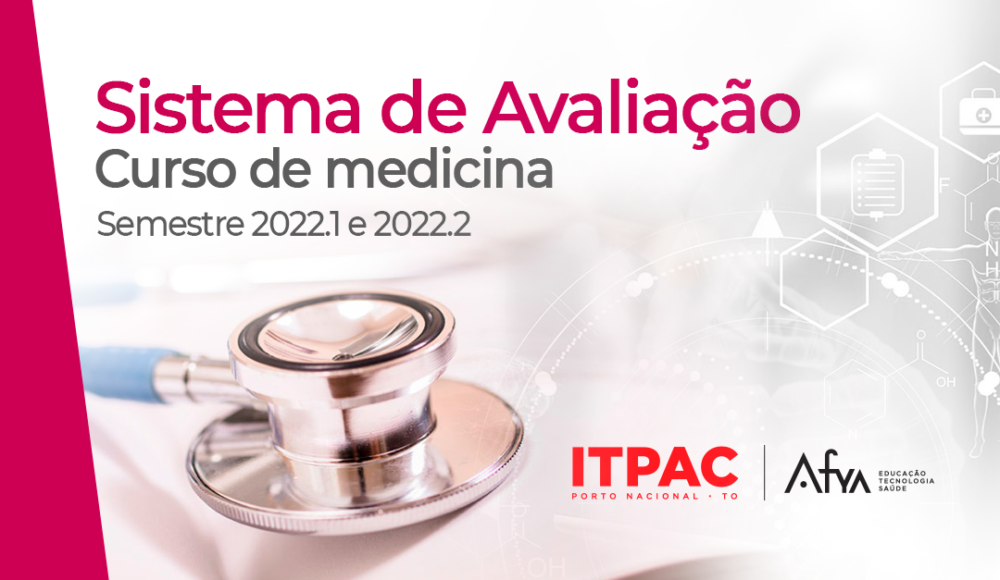
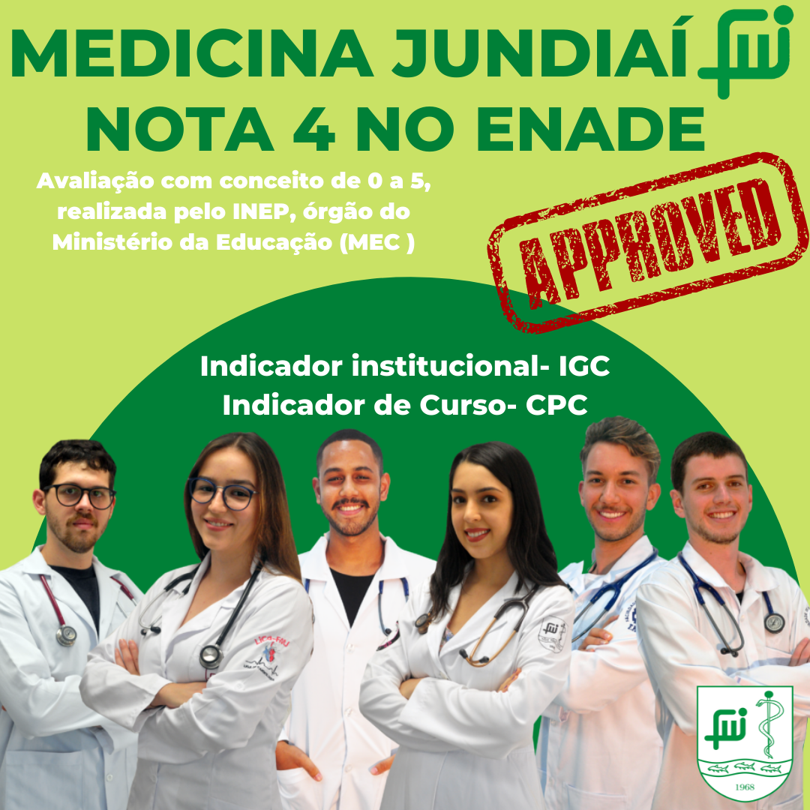

Sobre
Medicina é uma das muitas áreas do conhecimento ligada à manutenção e restauração da saúde. Ela trabalha, num sentido amplo, com a prevenção e cura das doenças humanas e animais num contexto médico. Lida com ações de saúde pública e ambiental, incluindo a saúde animal, promoção, prevenção, controle, erradicação e tratamento das doenças, traumatismos ou qualquer outro agravo à integridade e bem-estar animais, além do controlo de sanidade dos produtos e subprodutos de origem animal para o consumo humano e animal compreendem a área da medicina da responsabilidade do profissional de saúde médico veterinário.
Avaliações


Missão
Atuar com excelência, em benefício da sociedade, na supervisão da ética profissional médica, por meio de ações regulamentadoras, educacionais, fiscalizadoras, judicantes, cartoriais e políticas.
Visão
Ser referência para a promoção e garantia do exercício ético da medicina, da valorização e dignidade profissional do médico, tendo por princípio a melhoria das condições de vida e saúde da sociedade.
Valores
Ética, justiça, equidade, sustentabilidade, credibilidade, comprometimento com o cliente e interesse público.
Médicos